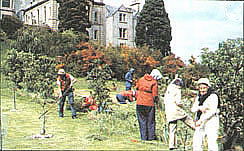
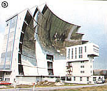
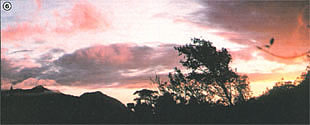
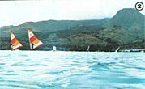
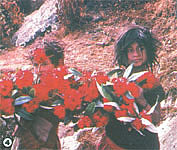
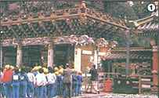

"For memory has painted this perfect day with colors that never fade, and we find at the end of a perfect day the soul of a friend we've made. " (Carne Jacobs Bond)
During the years that Mother's Tours have been helping folks explore the far corners of the earth, we've been impressed over and over again by how downright wonderful our readers are to travel with. You people - adventurous, diverse, hardy, open-minded, talented, slow to complain, and quick to laugh - have filled our trips with wisdom, love, knowledge, and companionship that, in retrospect, has often outshone even the most spectacular places we've visited. It isn't surprising, then, that our travels have resulted in readers' entering into deep friendships, business partnerships, and even marriages.
And this rare fellowship has never been stronger than it became during our recent visit to the New Age community of Findhorn in northern Scotland and our subsequent stay on the Hebridean island of Erraid, a childhood home of Robert Louis Stevenson. (Look for a report about life on this enchanted isle in our next issue.) In fact, the trip was so fulfilling, and so many people who wanted to go were unable to do so because the tour was already filled up, that we're making plans for a return visit to Findhorn and Erraid in June 1983. The timing will allow us to celebrate Midsummer's Eve in a land that still retains much of the magic of its Celtic past.
THE BEST OF FRANCE
There are many good reasons to take a trip through the French countryside: the fine food, the superb wines, the impressive historical landmarks, and the joie de vivre of that land's people . . . and MOTHER's second Energy Tour of France (to run October 14 to 24, 1982) will allow participants to enjoy all those things, on a journey that will take them from Luxembourg to Spain and from Andorra to Switzerland.
Furthermore, in addition to all of the usual French attractions, this trip will focus on France's renowned work with renewable energy resources. In Paris, we'll meet with energy experts from the Commissariat a l'Energie Solaire (COMES), then travel across France to a solar village, apartment complex, day-care center, sports center, and hospital. In Odeillo, we'll hear a lecture on the large sun-powered furnace there and inspect houses fitted with Trombe walls . . . before stopping at Montlouis to see the nation's first solar concentrating furnace, which was built in 1946. It's our belief that these and other visits (including a tour of the world's largest photovoltaic pumping station) and the opportunity for some great sightseeing (we'll tour Versailles and the cathedral at Reims, for instance) will combine to produce a wonderful vacation that'll give our travelers more knowledge about France's advanced alternative energy program than most French folks have.
However, the departure date for this educational tour, which is being cosponsored by Jordan College and COMES, is fast approaching. If you want to join it, we'll need your full payment of $1,395 very soon. (That price includes round-trip airfare from New York, deluxe hotels, breakfasts, land transportation, and more!)
HAWAII: LESS EXPENSIVE THAN EVER
It's not often - particularly in the travel field today - that we can actually lower prices . . . but we've managed to do just that for our Hawaii Energy Tour, December 2 to 10, 1982 ( and for our South Seas trip . . . see below). In fact, we're offering three Aloha State options.
First, you can choose a two-island sojourn that will show you how the people of Oahu and Hawaii are developing wind and solar power, aquaculture, hydropower, ocean thermal conversion, and biomass and ethanol production. This trip is priced at $948, which includes airfare, hotels, breakfasts, and sightseeing and energy-installation tours.
Second, for $848, you can take a similar energy tour of just one island (Oahu) . . . which will also leave you several days for exploring on your own.
Third, if turning yourself into a solar collector on the Oahu beaches appeals to you more than does seeing sun power at work on a technological basis, we're offering a one-island trip (which still includes airfare, hotels, and breakfasts without the guided tours) for only $698!
All prices quoted are for departures from Chicago (they may vary slightly - up or down - if you plan to leave from New York or the West Coast) . . . and whichever option you choose, $200 will reserve a place.
SOUTH SEAS SERENDIPITY
Speaking of the tropics, from January 23 to February 5, 1983 - while wild winter winds whip across most of this continent - you can escape with us to four of French Polynesia's most stunning coral-ringed jewels: Tahiti, Rangiroa, Huahine, and Bora Bora.
In these legendary (and still all but unspoiled) South Seas hideaways, we'll explore the beautiful underwater world of reef fish . . . spending hours floating face down in silky, warm, crystal-clear waters to observe iridescent, multicolored, exotic sea creatures that usually show little fear of human intruders. Better still, we'll have four of the world's top experts to explain exactly what we're seeing, as well as to help us appreciate the intricate ecology that allows this fragile, underwater fairyland to function so beautifully . . . because this trip will be a repeat of our South Seas Seminar with Paul and Anne Ehrlich - MOTHER's Ecoscience columnists - and their charming and knowledgeable friends and associates, John and Cheryl Holdren.
In addition to morning snorkeling sessions, group members can join the tour leaders on afternoon underwater research projects, or spend that time exploring sandy beaches, cloud-kissed peaks, and tiny island villages where time seems to have stood still for centuries. In the evenings, our explorers will gather again to hear lectures on ecological issues of world importance and to find out what each of us, as an individual, can do to care for and protect this good Spaceship Earth.
And, as mentioned above, we've been able to drop the cost of the South Seas getaway . . . to $2,495 from Los Angeles, including all airfare, hotels, breakfasts, and dinners ($200 will reserve your spot on this tropical excursion).
A HIMALAYAN SPRING SPECTACULAR
In the words of an ancient Sanskrit proverb, "A hundred divine epochs would not suffice to describe all the marvels of the Himalaya" . . . but MOTHER's trip to Nepal - from March 12 to April 1, 1983 - will do its best to give you a sampling of the wonders of this extraordinarily diverse region. Starting in Kathmandu, the 21-day expedition will include a bicycle tour of that city's many temples . . mountain trekking along remote trails (with stunning views of some of the world's most spectacular peaks) . . . and several days of rafting on the beautiful Trisuli River . . . which, in turn, will bring us to the Royal Chitwan National Park, where we'll search out wildlife from atop elephants.
The trip is also timed to allow you to see whole forests of giant rhododendron trees in bloom . . . and the cost is even lower than last year's Nepal trip: $2,750, which includes airfare and all other expenses except for a few meals in Kathmandu. However, we can take only 15 hardy souls on this often strenuous outing, and - as people are already signing up - it'd probably be wise to get your $300 deposit in soon.
THE PLANTS AND GARDENS OF JAPAN
This last trip is proving to be every bit as popular as the Nepal excursion . . . thanks largely to the fine reputation of our tour leader, Dr. John L. Creech, who is one of the Western world's top experts on Japanese gardening and a teacher who's able to share his awareness of the subtleties of that country's horticultural techniques. John's intimate knowledge of Japan - and his acquaintance with the land's top gardens and gardeners - should assure us of a unique and beautiful adventure in botany.
The Japanese tour has been carefully scheduled (from April 21 to May 12, 1983) to allow us to see the serene and lovely Oriental gardens in all their spring glory. Unfortunately, as a result of airfare increases, we've had to raise the price to $3,795, but this rate is all-inclusive (covering airfare from San Francisco, top Japanese hotels, and all meals). A $300 deposit is required.
To make reservations for any of our trips, send your deposit ($50 of which is nonrefundable) - by certified check or money order - to Mother's Tours, P.O. Box 70, Hendersonville, North Carolina 28791 . . . or write for more information.
|
 Findhorn's garden |
 Odeillo, France's solar furnace |
 Hawaiian sun power |
|
 South Seas sail surfing . . . |
 Nepal's rhododendron forests |
 The shrines of Japan |